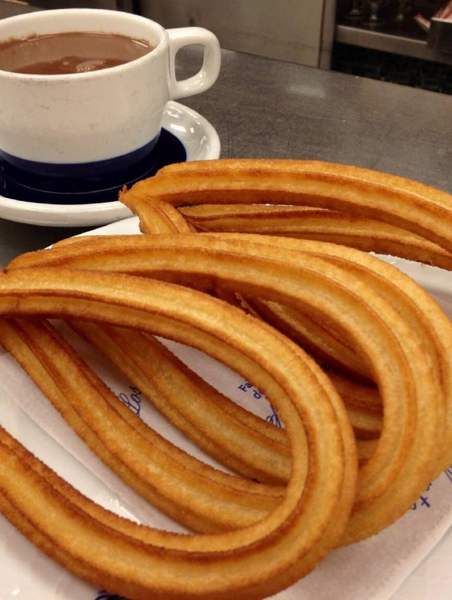

Desserts

Desserts
Churros
Beignets du petit matin
Préparation : 15 min
Repos : 20 min
Cuisson : 15 min
Ingrédients (pour 4 personnes)
- 250 ml de farine, mesurée en volume
- 250 ml d’eau
- 1 cuillère à café d’huile d’olive
- 1 pincée de sel
- huile pour frire, sucre
Quantités adaptées. Les temps de cuisson ne sont pas recalculés.
- Porter à ébullition eau, sel et huile.
- Jeter la farine d’un coup, remuer vivement jusqu’à une pâte lisse et épaisse.
- Laisser refroidir, puis remplir une churrera ou une poche solide à douille étoilée.
- Former les churros dans l’huile très chaude, dorer en restant en retrait.
- Égoutter, sucrer, servir aussitôt, avec un chocolat épais.
AstuceLa douille étoilée n’est pas un décor : un churro lisse peut éclater dans l’huile.
D’après Spain.info, office espagnol du tourisme. Traduit et reformulé, bol converti en 250 ml.